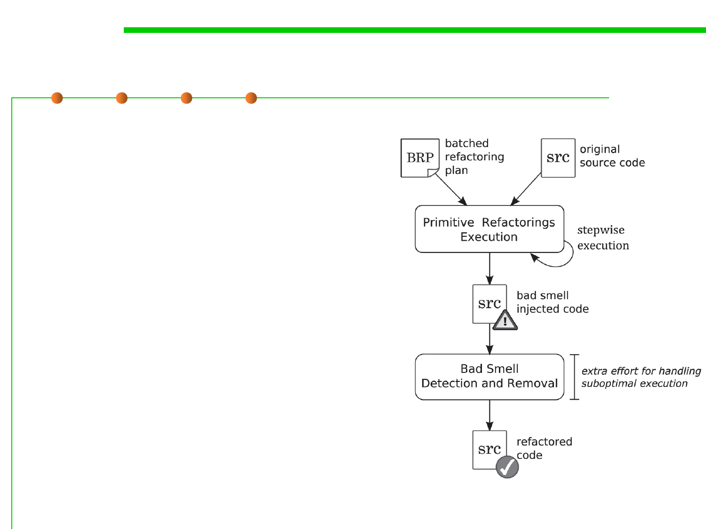

Refactoring process
▪ Identify where the software should be
refactored
▪ Determine which refactorings should
be applied to the identified places
▪ Guarantee that the applied refactoring
preserves behavior
▪ Apply the refactoring
▪ Assess the effect of the refactoring on
quality characteristics of the software
▪ Maintain the consistency between the
refactored program code and other
software artifacts
9.1 Code Smells Refactoring